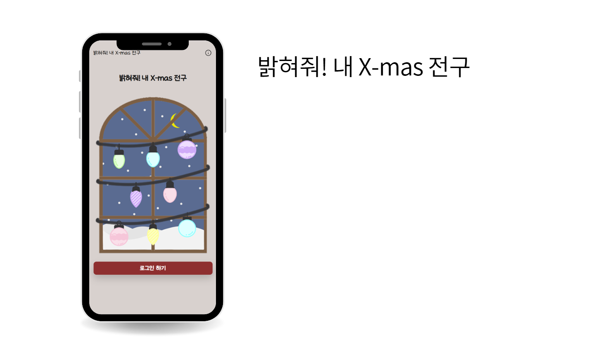

01
METAFUSE
메타인지 검사와 감정 기록을 활용한 AI 응원 서비스
내가 한 것
감정 분석 결과와 사용자 기록을 AI 응답에 연결하는 구조 설계
새로운 기술을 직접 연결하고, 실제로 동작하는 서비스로 완성했어요.
메타인지 검사와 감정 기록을 활용한 AI 응원 서비스
감정 분석 결과와 사용자 기록을 AI 응답에 연결하는 구조 설계
스마트폰 이상 신호를 감지해 보호자에게 알리는 서비스
FastAPI·AWS 기반 알림 흐름과 안정적인 메시지 전송 구조 구현

크리스마스에 공개되는 전구형 온라인 롤링페이퍼
React·FastAPI 기반 웹 개발, 배포 및 사용자 피드백 반영
“궁금한 것은 직접 만들어 보며 제 세계를 넓혀갑니다.”